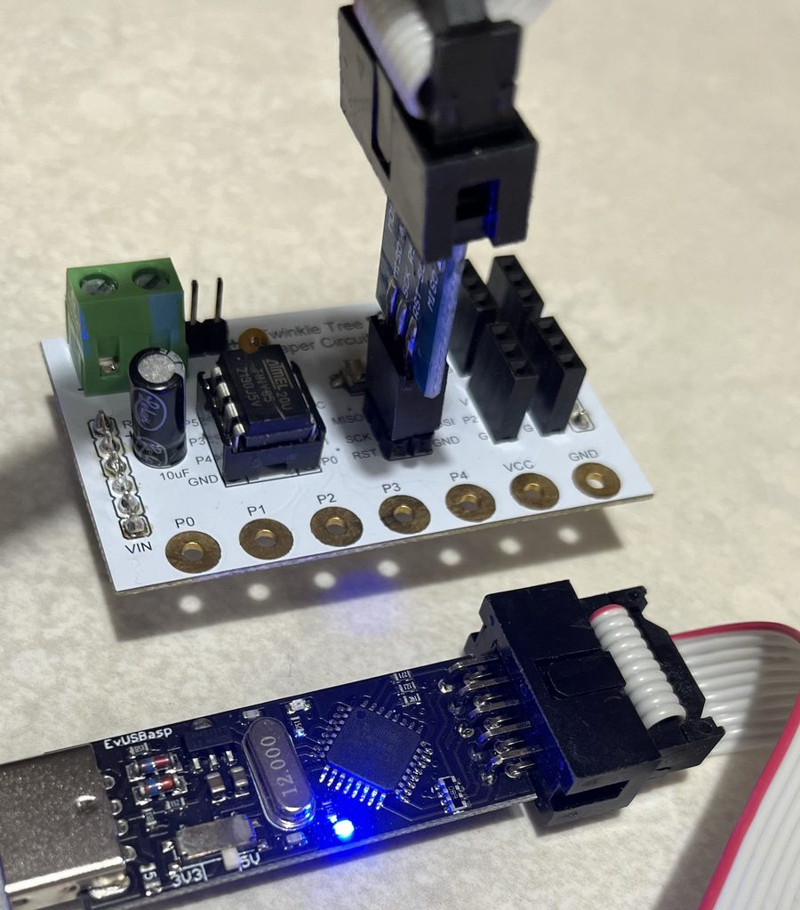

Twinkle Studio is a beginner-friendly coding app built around the ATtiny85 — a real, tiny microcontroller. Drag blocks, write Python, or describe what you want in plain language, then flash it onto actual hardware and watch it run.
Every mode compiles down to the same firmware and flashes the same ATtiny85 — nothing here is a simulation.
Snap together pins, loops, and timers. No typing required — great for a first lesson.
A small, real Python subset — variables, loops, functions — translated straight to C and compiled for the chip.
Describe the behavior you want in plain language. The generated code is always shown before anything gets flashed.
Pick your platform. Neither one needs Homebrew, Xcode, or anything installed ahead of time — the app installs its own compiler toolchain the first time it needs it.
Download the macOS .zip above, then double-click it. This gives you Twinkle Studio.app.
Drag the app into your Applications folder, or just leave it wherever's convenient and double-click to open it.
macOS will likely say the app is from an "unidentified developer" — that's expected for a small independent app.
The first time you try to flash a program, Twinkle Studio offers to download and install its own AVR compiler toolchain automatically — no separate installation needed.
Connect the USBasp programmer, wire up an LED as shown in Lesson 1, and hit Flash to Chip.
Download the Windows .zip above. This is a plain zip, not an installer — nothing runs until you open the app yourself.
Right-click the downloaded file and choose Extract All. Don't try to run the app from inside the zip viewer — extract it first.
Open the extracted win-unpacked folder and double-click Twinkle Studio.exe.
Windows will likely show a blue "Windows protected your PC" screen, since the app isn't from a registered publisher.
The first time you try to flash a program, Twinkle Studio offers to download and install its own AVR compiler toolchain automatically.
Windows doesn't ship a driver for the USBasp programmer, so it needs a one-time driver install using a free tool called Zadig.
About 2 minutes, once per computer. Plug in the USBasp first.

Get it free from zadig.akeo.ie and double-click zadig-2.9.exe. Windows may show a SmartScreen warning since Zadig has no paid certificate — click More info → Run anyway. This is normal.
In the menu bar, open Options and turn on List All Devices — otherwise the USBasp usually stays hidden.
Click the dropdown at the top and choose the entry named USBasp. If several unnamed devices appear instead, unplug and replug the programmer to see which one changes.
Use the arrows next to the right-hand box until it reads libusb-win32, then click Install Driver. A confirmation appears in a few seconds — you can then close Zadig.
Once the driver's installed, reopen Twinkle Studio, wire up an LED as shown in Lesson 1, and hit Flash to Chip.